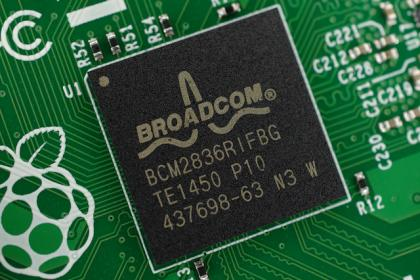

Le Raspberry Pi fut à la base destiné à l’enseignement de la programmation aux jeunes dans les écoles et dans les pays en voie de développement d’où son prix abordable (35 USD).

Le Raspberry Pi est constitué d’un processeur de type ARM (le même type de processeur trouvé sur les téléphones intelligents) et supporte plusieurs systèmes d’exploitation.
Officiellement, le Raspberry pi supporte le système d’exploitation Raspbian OS, une modification de la distribution linux Debian développée par The Raspberry Pi Foundation mais plusieurs systèmes d’exploitation tierces sont aussi supportés tel que:
En 2015 sort le Raspberry Pi 2, une version beaucoup plus puissante du Raspberry Pi qui remplace le processeur simple cœur par un processeur quadricœur.

En 2014 sort le Raspberry Pi Zero, une version encore plus petite du Raspberry Pi.